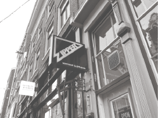
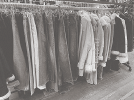
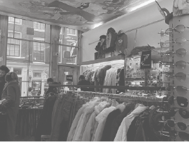

ZIPPER
- locaties:
- Huidenstraat 7
- Haarlemmerstraat 8
- 
- 
- 
De zipper is een tweedehandswinkel vol diverse kleding en schoenen. In de winkel kun je dus zeker wat leuks vinden! daarnaast staan zij ook elke maandag met een kraam op de maandagmarkt om hier de kleding te verkopen die in de winkel niet verkocht is en dit voor een nog mooier prijsje.